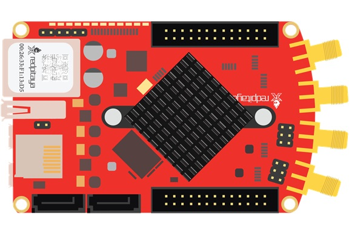
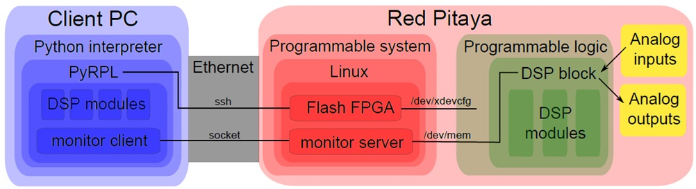
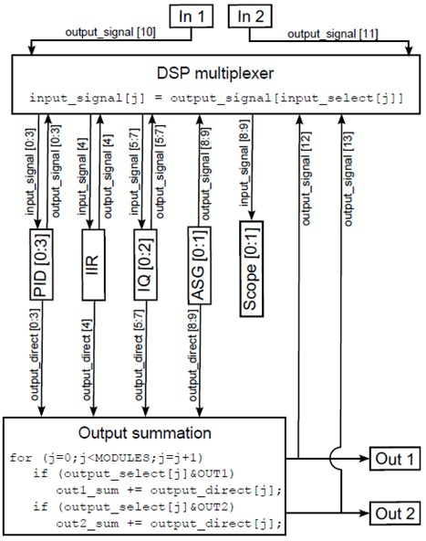
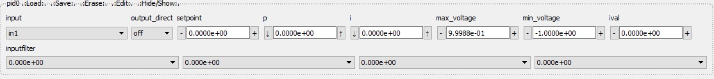

4. Basics of the PyRPL Architecture¶
This section presents the basic architecture of PyRPL. The main goal here is to quickly give a broad overview of PyRPL’s internal logic without distracting the reader with too many technical details. For a more detailed description of the individual components described in this page, please, refer to the corresponding section Notes for developers.
4.1. Motivation¶
Available hardware boards featuring FPGAs, CPUs and analog in- and outputs makes it possible to use digital signal processing (DSP) to control quantum optics experiments. Running open-source software on this hardware has many advantages:
Lab space: small size, less different devices
Money: cheap hardware, free software
Time: connect cables once, re-wire digitally automate experiments work from home
Automated measurements incite to take more data-points perform experiments more reproducibly record additional, auxiliary data
Functionality beyond analog electronics
Modify or customize instrument functionality
However, learning all the subtleties of FPGA programming, compiling and debugging FPGA code can be extremely time consuming. Hence, PyRPL aims at providing a large panel of functionalities on a precompiled FPGA bitfile. These FPGA modules are highly customizable by changing register values without the need to recompile the FPGA code written in Hardware Description Language. High-level functionalities are implemented by a python package running remotely and controlling the FPGA registers.
4.2. Hardware Platform - Red Pitaya¶
At the moment, Red Pitaya is the only hardware platform supported by PyRPL.
{kind=link}

The RedPitaya board is an affordable FPGA + CPU board running a Linux operating system. The FPGA is running at a clock rate of 125 MSps and it is interfaced with 2 analog inputs and 2 analog outputs (14 bits, 125 MSps). The minimum input-output latency is of the order of 200 ns and the effective resolution is 12 bits for inputs and 13 bits for outputs. 4 slow analog inputs and outputs and 16 I/O ports are also available. Visit the The Red Pitaya homepage (http://www.redpitaya.com) for more details on the platform.
4.3. Software Infrastructure¶
The FPGA functionalities of PyRPL are organized in various DSP modules. These modules can be configured and arbitrarily connected together using a python package running on a client computer. This design offers a lot of flexibility in the design and control of various experimental setups without having to recompile the FPGA code each time a different fonctionality is needed. A fast ethernet interface maps all FPGA registers to Python variables. The read/write time is around 250 microseconds for a typical LAN connection. High-level functionalities are achieved by performing successive operations on the FPGA registers using the Python API. A Graphical User Interface is also provided to easily visualize and modify the different FPGA registers. We provide a description of the different software components below.
{kind=link}

4.3.1. FPGA modules¶
At the moment, the FPGA code provided with PyRPL implements various Digital Signal Processing modules:
Module name |
# available |
Short description |
|---|---|---|
Scope |
1 |
A 16384 points, 2 channels oscilloscope capable of monitoring internal or external signals |
ASG |
2 |
An arbitrary signal generator capable of generating various waveforms, and even gaussian white noise |
IQ modulator/ demodulator |
3 |
An internal frequency reference is used to digitally demodulate a given input signal. The frequency reference can be outputed to serve as a driving signal. The slowly varying quadratures can also be used to remodulate the 2 phase-shifted internal references, turning the module into a very narrow bandpass filter. See the page Iq Widget for more details |
PID |
3 |
Proportional/Integrator/Differential feedback modules (In the current version, the differential gain is disabled). The gain of each parameter can be set independently and each module is also equiped with a 4th order linear filter (applied before the PID correction) |
IIR |
1 |
An Infinite Impulse Response filter that can be used to realize real-time filters with comlex transfer-functions |
Trigger |
1 |
A module to detect a transition on an analog signal. |
Sampler |
1 |
A module to sample each external or external signal |
Pwm |
4 |
Modules to control the pulse width modulation pins of the redpitaya |
Hk |
1 |
House keeping module to monitor redpitaya constants and control the LED status |
Modules can be connected to each other arbitrarily. For this purpose, the modules contain a generic register input_select (except for ASG). Connecting the output_signal of submodule i to the input_signal of submodule j is done by setting the register input_select[j] to i;
Similarly, a second, possibly different output is allowed for each module (except for scope and trigger): output_direct. This output is added to the analog output 1 and/or 2 depending on the value of the register output_select.
The routing of digital signals within the different FPGA modules is handled by a DSP multiplexer coded in VHDL in the file red_pitaya_dsp.v. An illustration of the DSP module’s principle is provided below:
{kind=link}

4.3.2. Monitor Server¶
The monitor server is a lightweight application written in C (the source code is in the file monitor_server.c) and running on the redpitaya OS to allow remote writing and monitoring of FPGA registers.
The program is launched on the redpitaya with (automatically done at startup):
./monitor-server PORT-NUMBER, where the default port number is 2222.
We allow for bidirectional data transfer. The client (python program) connects to the server, which in return accepts the connection. The client sends 8 bytes of data:
Byte 1 is interpreted as a character: ‘r’ for read and ‘w’ for write, and ‘c’ for close. All other messages are ignored.
Byte 2 is reserved.
Bytes 3+4 are interpreted as unsigned int. This number n is the amount of 4-byte-units to be read or written. Maximum is 2^16.
Bytes 5-8 are the start address to be written to.
If the command is read, the server will then send the requested 4*n bytes to the client. If the command is write, the server will wait for 4*n bytes of data from the server and write them to the designated FPGA address space. If the command is close, or if the connection is broken, the server program will terminate.
After this, the server will wait for the next command.
4.3.3. Python package PyRPL¶
The python package PyRPL defines all the necessary tools to abstract the communication layer between the client-computer and the redpitaya. In this way, it is possible to manipulate FPGA registers transparently, as if they were simple attributes of local python objects. We give here a brief overview of the main python objects in PyRPL.
4.3.3.1. The Module class¶
Each FPGA module has a python counterpart: an instance of the class HardwareModule. The inheritance diagram of all HardwareModules is represented below:
digraph inheritanceb44b3b604d { bgcolor=transparent; rankdir=LR; size="8.0, 12.0"; "AcquisitionModule" [fillcolor=white,fontname="Vera Sans, DejaVu Sans, Liberation Sans, Arial, Helvetica, sans",fontsize=10,height=0.25,shape=box,style="setlinewidth(0.5),filled",tooltip="When an asynchronous acquisition is running"]; "Module" -> "AcquisitionModule" [arrowsize=0.5,style="setlinewidth(0.5)"]; "DspModule" [fillcolor=white,fontname="Vera Sans, DejaVu Sans, Liberation Sans, Arial, Helvetica, sans",fontsize=10,height=0.25,shape=box,style="setlinewidth(0.5),filled",tooltip="A module with an input and an auxiliary output_direct signal."]; "HardwareModule" -> "DspModule" [arrowsize=0.5,style="setlinewidth(0.5)"]; "SignalModule" -> "DspModule" [arrowsize=0.5,style="setlinewidth(0.5)"]; "FilterModule" [fillcolor=white,fontname="Vera Sans, DejaVu Sans, Liberation Sans, Arial, Helvetica, sans",fontsize=10,height=0.25,shape=box,style="setlinewidth(0.5),filled",tooltip="Setup Attributes:"]; "DspModule" -> "FilterModule" [arrowsize=0.5,style="setlinewidth(0.5)"]; "HardwareModule" [fillcolor=white,fontname="Vera Sans, DejaVu Sans, Liberation Sans, Arial, Helvetica, sans",fontsize=10,height=0.25,shape=box,style="setlinewidth(0.5),filled",tooltip="Module that directly maps a FPGA module. In addition to BaseModule's"]; "Module" -> "HardwareModule" [arrowsize=0.5,style="setlinewidth(0.5)"]; "IIR" [fillcolor=white,fontname="Vera Sans, DejaVu Sans, Liberation Sans, Arial, Helvetica, sans",fontsize=10,height=0.25,shape=box,style="setlinewidth(0.5),filled",tooltip="Setup Attributes:"]; "FilterModule" -> "IIR" [arrowsize=0.5,style="setlinewidth(0.5)"]; "Iq" [fillcolor=white,fontname="Vera Sans, DejaVu Sans, Liberation Sans, Arial, Helvetica, sans",fontsize=10,height=0.25,shape=box,style="setlinewidth(0.5),filled",tooltip="A modulator/demodulator module."]; "FilterModule" -> "Iq" [arrowsize=0.5,style="setlinewidth(0.5)"]; "Module" [fillcolor=white,fontname="Vera Sans, DejaVu Sans, Liberation Sans, Arial, Helvetica, sans",fontsize=10,height=0.25,shape=box,style="setlinewidth(0.5),filled",tooltip="A module is a component of pyrpl doing a specific task."]; "Pid" [fillcolor=white,fontname="Vera Sans, DejaVu Sans, Liberation Sans, Arial, Helvetica, sans",fontsize=10,height=0.25,shape=box,style="setlinewidth(0.5),filled",tooltip="A proportional/Integrator/Differential filter."]; "FilterModule" -> "Pid" [arrowsize=0.5,style="setlinewidth(0.5)"]; "Pwm" [fillcolor=white,fontname="Vera Sans, DejaVu Sans, Liberation Sans, Arial, Helvetica, sans",fontsize=10,height=0.25,shape=box,style="setlinewidth(0.5),filled",tooltip="Auxiliary outputs. PWM0-3 correspond to pins 17-20 on E2 connector."]; "DspModule" -> "Pwm" [arrowsize=0.5,style="setlinewidth(0.5)"]; "Sampler" [fillcolor=white,fontname="Vera Sans, DejaVu Sans, Liberation Sans, Arial, Helvetica, sans",fontsize=10,height=0.25,shape=box,style="setlinewidth(0.5),filled",tooltip="this module provides a sample of each signal."]; "HardwareModule" -> "Sampler" [arrowsize=0.5,style="setlinewidth(0.5)"]; "Scope" [fillcolor=white,fontname="Vera Sans, DejaVu Sans, Liberation Sans, Arial, Helvetica, sans",fontsize=10,height=0.25,shape=box,style="setlinewidth(0.5),filled",tooltip="Setup Attributes:"]; "HardwareModule" -> "Scope" [arrowsize=0.5,style="setlinewidth(0.5)"]; "AcquisitionModule" -> "Scope" [arrowsize=0.5,style="setlinewidth(0.5)"]; "SignalModule" [fillcolor=white,fontname="Vera Sans, DejaVu Sans, Liberation Sans, Arial, Helvetica, sans",fontsize=10,height=0.25,shape=box,style="setlinewidth(0.5),filled",tooltip="any module that can be passed as an input to another module"]; "Module" -> "SignalModule" [arrowsize=0.5,style="setlinewidth(0.5)"]; "Trig" [fillcolor=white,fontname="Vera Sans, DejaVu Sans, Liberation Sans, Arial, Helvetica, sans",fontsize=10,height=0.25,shape=box,style="setlinewidth(0.5),filled",tooltip="The trigger module implements a full-rate trigger on a DSP signal."]; "FilterModule" -> "Trig" [arrowsize=0.5,style="setlinewidth(0.5)"]; }For more complex functionalities, such as those involving the concurrent use of several FPGA modules, purely software modules can be created. Those modules only inherit from the base class Module and they don’t have an FPGA counterpart. Below, the inheritance diagram of all software modules:
digraph inheritance45bd9e3d71 { bgcolor=transparent; rankdir=LR; size="8.0, 12.0"; "AcquisitionModule" [fillcolor=white,fontname="Vera Sans, DejaVu Sans, Liberation Sans, Arial, Helvetica, sans",fontsize=10,height=0.25,shape=box,style="setlinewidth(0.5),filled",tooltip="When an asynchronous acquisition is running"]; "Module" -> "AcquisitionModule" [arrowsize=0.5,style="setlinewidth(0.5)"]; "Asgs" [fillcolor=white,fontname="Vera Sans, DejaVu Sans, Liberation Sans, Arial, Helvetica, sans",fontsize=10,height=0.25,shape=box,style="setlinewidth(0.5),filled",tooltip="Setup Attributes:"]; "ModuleManager" -> "Asgs" [arrowsize=0.5,style="setlinewidth(0.5)"]; "CurveViewer" [fillcolor=white,fontname="Vera Sans, DejaVu Sans, Liberation Sans, Arial, Helvetica, sans",fontsize=10,height=0.25,shape=box,style="setlinewidth(0.5),filled",tooltip="This Module allows to browse through curves that were taken with pyrpl"]; "Module" -> "CurveViewer" [arrowsize=0.5,style="setlinewidth(0.5)"]; "Iirs" [fillcolor=white,fontname="Vera Sans, DejaVu Sans, Liberation Sans, Arial, Helvetica, sans",fontsize=10,height=0.25,shape=box,style="setlinewidth(0.5),filled",tooltip="Only one iir, but it should be protected by the slave/owner mechanism."]; "ModuleManager" -> "Iirs" [arrowsize=0.5,style="setlinewidth(0.5)"]; "Iqs" [fillcolor=white,fontname="Vera Sans, DejaVu Sans, Liberation Sans, Arial, Helvetica, sans",fontsize=10,height=0.25,shape=box,style="setlinewidth(0.5),filled",tooltip="Setup Attributes:"]; "ModuleManager" -> "Iqs" [arrowsize=0.5,style="setlinewidth(0.5)"]; "Lockbox" [fillcolor=white,fontname="Vera Sans, DejaVu Sans, Liberation Sans, Arial, Helvetica, sans",fontsize=10,height=0.25,shape=box,style="setlinewidth(0.5),filled",tooltip="A Module that allows to perform feedback on systems that are well described"]; "LockboxModule" -> "Lockbox" [arrowsize=0.5,style="setlinewidth(0.5)"]; "LockboxModule" [fillcolor=white,fontname="Vera Sans, DejaVu Sans, Liberation Sans, Arial, Helvetica, sans",fontsize=10,height=0.25,shape=box,style="setlinewidth(0.5),filled",tooltip="Setup Attributes:"]; "Module" -> "LockboxModule" [arrowsize=0.5,style="setlinewidth(0.5)"]; "Loop" [fillcolor=white,fontname="Vera Sans, DejaVu Sans, Liberation Sans, Arial, Helvetica, sans",fontsize=10,height=0.25,shape=box,style="setlinewidth(0.5),filled",tooltip="Setup Attributes:"]; "Module" -> "Loop" [arrowsize=0.5,style="setlinewidth(0.5)"]; "Module" [fillcolor=white,fontname="Vera Sans, DejaVu Sans, Liberation Sans, Arial, Helvetica, sans",fontsize=10,height=0.25,shape=box,style="setlinewidth(0.5),filled",tooltip="A module is a component of pyrpl doing a specific task."]; "ModuleManager" [fillcolor=white,fontname="Vera Sans, DejaVu Sans, Liberation Sans, Arial, Helvetica, sans",fontsize=10,height=0.25,shape=box,style="setlinewidth(0.5),filled",tooltip="Manages access to hardware modules. It is created from a list of"]; "Module" -> "ModuleManager" [arrowsize=0.5,style="setlinewidth(0.5)"]; "NetworkAnalyzer" [fillcolor=white,fontname="Vera Sans, DejaVu Sans, Liberation Sans, Arial, Helvetica, sans",fontsize=10,height=0.25,shape=box,style="setlinewidth(0.5),filled",tooltip="Using an IQ module, the network analyzer can measure the complex coherent"]; "AcquisitionModule" -> "NetworkAnalyzer" [arrowsize=0.5,style="setlinewidth(0.5)"]; "SignalModule" -> "NetworkAnalyzer" [arrowsize=0.5,style="setlinewidth(0.5)"]; "PlotLoop" [fillcolor=white,fontname="Vera Sans, DejaVu Sans, Liberation Sans, Arial, Helvetica, sans",fontsize=10,height=0.25,shape=box,style="setlinewidth(0.5),filled",tooltip="Setup Attributes:"]; "Loop" -> "PlotLoop" [arrowsize=0.5,style="setlinewidth(0.5)"]; "PyrplConfig" [fillcolor=white,fontname="Vera Sans, DejaVu Sans, Liberation Sans, Arial, Helvetica, sans",fontsize=10,height=0.25,shape=box,style="setlinewidth(0.5),filled",tooltip="This Module allows the Gui to configure the global settins, such as redpitaya and pyrpl"]; "Module" -> "PyrplConfig" [arrowsize=0.5,style="setlinewidth(0.5)"]; "Scopes" [fillcolor=white,fontname="Vera Sans, DejaVu Sans, Liberation Sans, Arial, Helvetica, sans",fontsize=10,height=0.25,shape=box,style="setlinewidth(0.5),filled",tooltip="Only one scope, but it should be protected by the slave/owner mechanism."]; "ModuleManager" -> "Scopes" [arrowsize=0.5,style="setlinewidth(0.5)"]; "SignalModule" [fillcolor=white,fontname="Vera Sans, DejaVu Sans, Liberation Sans, Arial, Helvetica, sans",fontsize=10,height=0.25,shape=box,style="setlinewidth(0.5),filled",tooltip="any module that can be passed as an input to another module"]; "Module" -> "SignalModule" [arrowsize=0.5,style="setlinewidth(0.5)"]; "SoftwarePidLoop" [fillcolor=white,fontname="Vera Sans, DejaVu Sans, Liberation Sans, Arial, Helvetica, sans",fontsize=10,height=0.25,shape=box,style="setlinewidth(0.5),filled",tooltip="Setup Attributes:"]; "PlotLoop" -> "SoftwarePidLoop" [arrowsize=0.5,style="setlinewidth(0.5)"]; "SpectrumAnalyzer" [fillcolor=white,fontname="Vera Sans, DejaVu Sans, Liberation Sans, Arial, Helvetica, sans",fontsize=10,height=0.25,shape=box,style="setlinewidth(0.5),filled",tooltip="A spectrum analyzer is composed of an IQ demodulator, followed by a scope."]; "AcquisitionModule" -> "SpectrumAnalyzer" [arrowsize=0.5,style="setlinewidth(0.5)"]; "Trigs" [fillcolor=white,fontname="Vera Sans, DejaVu Sans, Liberation Sans, Arial, Helvetica, sans",fontsize=10,height=0.25,shape=box,style="setlinewidth(0.5),filled",tooltip="Only one trig, but it should be protected by the slave/owner mechanism."]; "ModuleManager" -> "Trigs" [arrowsize=0.5,style="setlinewidth(0.5)"]; }In addition, to prevent a hardware resource from being used twice, HardwareModules should be accessed via the ModuleManagers which takes care of reserving them for a specific user or Module. For example:
# import pyrpl library
from pyrpl import Pyrpl
# create an interface to the Red Pitaya
pyrpl = Pyrpl()
# reserve the scope for user 'username'
with pyrpl.scopes.pop('username') as mod:
curve = mod.single() # acquire a curve
# The scope is freed for later use at this point
4.3.3.2. The Proprety descriptors¶
HardwareModules are essentially a list of FPGA registers that can be accessed transparently such as on the following example:
# import pyrpl library
import pyrpl
# create an interface to the Red Pitaya
r = pyrpl.Pyrpl().redpitaya
print(r.hk.led) # print the current led pattern
r.hk.led = 0b10101010 # change led pattern
Changing a register’s value should trigger the following actions:
communicating the new value to the monitor_server for the FPGA update via a TCP-IP socket.
the new value should be saved on-disk to restore the system in the same state at the next startup.
in case a Graphical User Interface is running, the displayed value should be updated.
To make sure all these actions are triggered by the simple python affectation, we use a descriptor pattern. The idea is to define setter and getter functions inside an auxilary “descriptor” class. The diagram below shows the inheritance diagram for the most common attribute descriptor types.
digraph inheritanceaac0d169e5 { bgcolor=transparent; rankdir=LR; size="8.0, 12.0"; "BaseAttribute" [fillcolor=white,fontname="Vera Sans, DejaVu Sans, Liberation Sans, Arial, Helvetica, sans",fontsize=10,height=0.25,shape=box,style="setlinewidth(0.5),filled",tooltip="base class for attribute - only used as a placeholder"]; "BaseProperty" [fillcolor=white,fontname="Vera Sans, DejaVu Sans, Liberation Sans, Arial, Helvetica, sans",fontsize=10,height=0.25,shape=box,style="setlinewidth(0.5),filled",tooltip="A Property is a special type of attribute that is not mapping a fpga value,"]; "BaseAttribute" -> "BaseProperty" [arrowsize=0.5,style="setlinewidth(0.5)"]; "BaseRegister" [fillcolor=white,fontname="Vera Sans, DejaVu Sans, Liberation Sans, Arial, Helvetica, sans",fontsize=10,height=0.25,shape=box,style="setlinewidth(0.5),filled",tooltip="Registers implement the necessary read/write logic for storing an attribute on the redpitaya."]; "BaseProperty" -> "BaseRegister" [arrowsize=0.5,style="setlinewidth(0.5)"]; "BoolProperty" [fillcolor=white,fontname="Vera Sans, DejaVu Sans, Liberation Sans, Arial, Helvetica, sans",fontsize=10,height=0.25,shape=box,style="setlinewidth(0.5),filled",tooltip="A property for a boolean value"]; "BaseProperty" -> "BoolProperty" [arrowsize=0.5,style="setlinewidth(0.5)"]; "BoolRegister" [fillcolor=white,fontname="Vera Sans, DejaVu Sans, Liberation Sans, Arial, Helvetica, sans",fontsize=10,height=0.25,shape=box,style="setlinewidth(0.5),filled",tooltip="Inteface for boolean values, 1: True, 0: False."]; "BaseRegister" -> "BoolRegister" [arrowsize=0.5,style="setlinewidth(0.5)"]; "BoolProperty" -> "BoolRegister" [arrowsize=0.5,style="setlinewidth(0.5)"]; "FilterProperty" [fillcolor=white,fontname="Vera Sans, DejaVu Sans, Liberation Sans, Arial, Helvetica, sans",fontsize=10,height=0.25,shape=box,style="setlinewidth(0.5),filled",tooltip="An attribute for a list of bandwidth. Each bandwidth has to be chosen in a list given by"]; "BaseProperty" -> "FilterProperty" [arrowsize=0.5,style="setlinewidth(0.5)"]; "FilterRegister" [fillcolor=white,fontname="Vera Sans, DejaVu Sans, Liberation Sans, Arial, Helvetica, sans",fontsize=10,height=0.25,shape=box,style="setlinewidth(0.5),filled",tooltip="Interface for up to 4 low-/highpass filters in series (filter_block.v)"]; "BaseRegister" -> "FilterRegister" [arrowsize=0.5,style="setlinewidth(0.5)"]; "FilterProperty" -> "FilterRegister" [arrowsize=0.5,style="setlinewidth(0.5)"]; "FloatProperty" [fillcolor=white,fontname="Vera Sans, DejaVu Sans, Liberation Sans, Arial, Helvetica, sans",fontsize=10,height=0.25,shape=box,style="setlinewidth(0.5),filled",tooltip="An attribute for a float value."]; "NumberProperty" -> "FloatProperty" [arrowsize=0.5,style="setlinewidth(0.5)"]; "FloatRegister" [fillcolor=white,fontname="Vera Sans, DejaVu Sans, Liberation Sans, Arial, Helvetica, sans",fontsize=10,height=0.25,shape=box,style="setlinewidth(0.5),filled",tooltip="Implements a fixed point register, seen like a (signed) float from python"]; "IntRegister" -> "FloatRegister" [arrowsize=0.5,style="setlinewidth(0.5)"]; "FloatProperty" -> "FloatRegister" [arrowsize=0.5,style="setlinewidth(0.5)"]; "IntProperty" [fillcolor=white,fontname="Vera Sans, DejaVu Sans, Liberation Sans, Arial, Helvetica, sans",fontsize=10,height=0.25,shape=box,style="setlinewidth(0.5),filled"]; "NumberProperty" -> "IntProperty" [arrowsize=0.5,style="setlinewidth(0.5)"]; "IntRegister" [fillcolor=white,fontname="Vera Sans, DejaVu Sans, Liberation Sans, Arial, Helvetica, sans",fontsize=10,height=0.25,shape=box,style="setlinewidth(0.5),filled",tooltip="Register for integer values encoded on less than 32 bits."]; "BaseRegister" -> "IntRegister" [arrowsize=0.5,style="setlinewidth(0.5)"]; "IntProperty" -> "IntRegister" [arrowsize=0.5,style="setlinewidth(0.5)"]; "NumberProperty" [fillcolor=white,fontname="Vera Sans, DejaVu Sans, Liberation Sans, Arial, Helvetica, sans",fontsize=10,height=0.25,shape=box,style="setlinewidth(0.5),filled",tooltip="Abstract class for ints and floats"]; "BaseProperty" -> "NumberProperty" [arrowsize=0.5,style="setlinewidth(0.5)"]; "SelectProperty" [fillcolor=white,fontname="Vera Sans, DejaVu Sans, Liberation Sans, Arial, Helvetica, sans",fontsize=10,height=0.25,shape=box,style="setlinewidth(0.5),filled"]; "BaseProperty" -> "SelectProperty" [arrowsize=0.5,style="setlinewidth(0.5)"]; "SelectRegister" [fillcolor=white,fontname="Vera Sans, DejaVu Sans, Liberation Sans, Arial, Helvetica, sans",fontsize=10,height=0.25,shape=box,style="setlinewidth(0.5),filled",tooltip="Implements a selection register, such as for multiplexers."]; "BaseRegister" -> "SelectRegister" [arrowsize=0.5,style="setlinewidth(0.5)"]; "SelectProperty" -> "SelectRegister" [arrowsize=0.5,style="setlinewidth(0.5)"]; }As for the distinction between software modules and hardware modules above, the properties that inherit from BaseRegister are directly mapping an FPGA register. On the other hand, software modules are using properties that are not in direct correspondance with an FPGA register. However, since they inherit from BaseAttribute, the load/save and GUI update mechanism is still implemented.
4.3.3.3. Module states¶
An important member of the Module class is the list _setup_attributes. This is a list of attribute names forming a subset of all module attributes. The value of the attributes in _setup_attributes constitutes the current state of the module. When the PyRPL instance has been created with a configuration file, the current state of each module is kept in-sync with the configuration file. This is particularly useful for GUI users who would like to keep the previous settings of all modules from one session to the next.
Warning
The config file is not kept in-sync with modules that are reserved by a user or another module. It is the responsibility of the user-script or owner module to keep track of the slave module state. Moreover, the slave-module is restored to the last current state whenever it becomes free.
The state of a module can be saved for later use in a separate section of the config file. The following example shows the basic use of the load/save API:
# import pyrpl library
from pyrpl import Pyrpl
# create an interface to the Red Pitaya
scope = Pyrpl('new_config_file').redpitaya.scope
scope.duration = 1. # set curve duration to 1s
scope.save_state('slow_scan') # save state with label 'slow_scan'
scope.duration = 0.01 # set curve duration to 0.01s
scope.save_state('fast_scan') # save state with label 'fast_scan'
scope.load_state('slow_scan') # load state 'slow_scan'
scope.single() # acquire curve with a 1s duration
4.3.3.4. Automatic GUI creation¶
Designing Graphical User Interface can be a tedious work. However, since module attributes are defined in a uniform fashion across the project, most of the GUI creation can be handled automatically. Our GUI is based on the very popular and cross-platform library PyQt in conjunction with the qtpy abstraction layer.
Each PyRPL module is represented by a widget in the Main PyRPL window. The list of attributes to display in the GUI is defined in the Module class by the class member _gui_attributes. When the module widget is created, sub-widgets are automatically created to manipulate the value of each attribute listed in _gui_attributes.
4.3.3.5. Example: definition of the Pid class¶
The following is extracted from pid.py
class Pid(FilterModule):
# Type of widget to use for this Module class
# should derive from ModuleWidget
_widget_class = PidWidget
# QObject used to communicate with the widget
_signal_launcher = SignalLauncherPid
# List of attributes forming the module state
_setup_attributes = ["input", # defined in base class FilterModule
"output_direct", # defined in base class FilterModule
"setpoint",
"p",
"i",
#"d", # Not implemented in the current version of PyRPL
"inputfilter",
"max_voltage",
"min_voltage"]
# list of attribtue to display in the GUI
_gui_attributes = _setup_attributes + ["ival"]
# Actions to perform immediately after a state has been loaded
def _setup(self):
"""
sets up the pid (just setting the attributes is OK).
"""
pass
# Below are the different attributes of a PID module (mostly registers)
ival = IValAttribute(min=-4, max=4, increment= 8. / 2**16, doc="Current "
"value of the integrator memory (i.e. pid output voltage offset)")
setpoint = FloatRegister(0x104, bits=14, norm= 2 **13,
doc="pid setpoint [volts]")
min_voltage = FloatRegister(0x124, bits=14, norm= 2 **13,
doc="minimum output signal [volts]")
max_voltage = FloatRegister(0x128, bits=14, norm= 2 **13,
doc="maximum output signal [volts]")
p = GainRegister(0x108, bits=_GAINBITS, norm= 2 **_PSR,
doc="pid proportional gain [1]")
i = GainRegister(0x10C, bits=_GAINBITS, norm= 2 **_ISR * 2.0 * np.pi *
8e-9,
doc="pid integral unity-gain frequency [Hz]")
(...)
The generated widget is represented below:
{kind=link}
